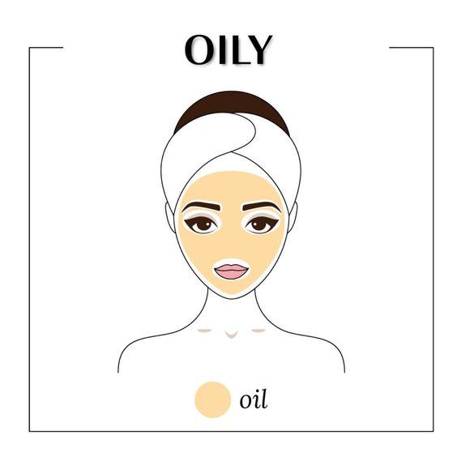

Antes de empezar con nuestra rutina es muy importante identificar tu tipo de piel para poder cuidarla e hidratarla correctamente. En mi opinión,siempre hay que consultar con un/a dermatólogo/a antes de comprar cualquier producto.
Tipos de piel
- Aspecto brillante.
- Poros muy abiertos.
- Tendencia a espinillas y puntos negros.
- Son pieles gruesas.
- Textura áspera
- Piel muy fina y poco elástica
- Poros cerrados
- Se suele ver y/o sentir tirante o agrietada.
- Son muy opacas, sin nada de brillo.
- Tiene características de la piel grasa en la zona T
y mas bien secas en el resto del rostro. - Son pieles normales con tendencia a grasa o
seca, generalmente dependiendo de la época del año. - Piel que se ruboriza fácilmente. Tienden a estar rojas
en la parte central del rostro. - Son muy sensibles a la vista y ásperas al tacto.
- Se enrojecen rápido cuando se exponen al sol.
- Es equilibrada, no es ni demasiado grasa,
ni demasiado seca - Poros finos, libre de impurezas y no se irrita fácilmente.
- Es muy común en los niños y la adolescencia.
Piel Grasa:

Piel Seca:
Piel Mixta:
Piel Sensible:
Piel Normal:
La piel de cada persona tiene sus propias necesidades, existen pasos que aplican para todo tipo de piel y lo que varía, es cuál es el producto más adecuado según su textura y componentes.
Pasos básicos para hacer una limpieza facial
Limpieza
Limpia tu rostro con un limpiador para tu tipo de piel, comienza a limpiar tu cara
delicadamente con movimientos circulares.
Enjuaga y seca tu rostro con una toalla exclusiva para tu cara, sin frotar, dando
solo ligeros golpecitos.
Exfoliante
Es un paso súper importante en las rutinas de belleza. Se encarga de limpiar
profundamente los poros, remover células muertas de la piel y eliminar mugre y polvo.
Lo más importante que debes tener en mente es que este paso NO se realiza todos los días,
ya que puedes lastimar tu piel.
Dependiendo de tu rostro debes exfoliar una vez a la semana o cada dos semanas.
Hidratante
No importa si tienes la piel seca, mixta o muy grasa, este paso no lo debes omitir jamás,
si tienes la piel grasa el no hidratarla sólo hará que tu cuerpo emita más grasa.
Por esto es muy importante aplicar una crema hidratante según tu tipo de piel.
Coloca la crema en tu rostro y luego esparcela gentilmente.
Protector solar
Entre todos los pasos, este es el más importante para tu salud. Proteger tu piel del sol
SIEMPRE, sea invierno, llueva o no, Y AUNQUE ESTE NUBLADO, protege siempre tu piel con
un protector solar con un minimo de factor 30 para evitar posibles manchas y
despigmentaciones en la piel. También es importante que, conforme avance el día,
retoques el bloqueador. Esto puedes hacerlo con un protector en spray.
Después de esto, maquillate como normalmente lo harias.
Siempre puedes agregar gradualmente productos o pasos a tu rutina que se integren a tu estilo de vida. La meta es obtener una piel balanceada, hidratada y saludable.